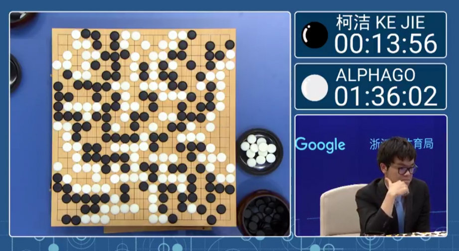
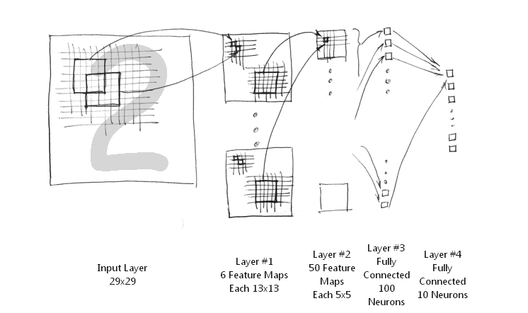
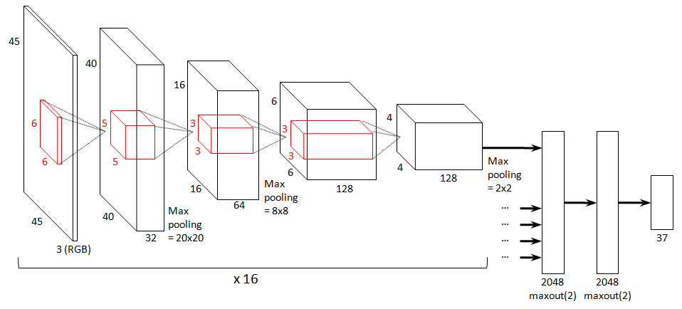

Pragmatic AI
What you need to know and how to start.
Created by Guilherme Hartmann
Motivation
Why Pragmatic AI?
- What is AI?
- What do I need to know?
- How to start?
What do you mean about AI?
- Machine Learning and Adaptive Learning
- Artificial Intelligence aka Weak AI
- Artificial General Intelligence aka Strong AI
Machine Learning
Fitting values
Artificial Intelligence
Black Box Learning
AGI Complexity
Why is it funny ?

Undestanding of Gravity and Mechinal Scales
Realtime Speech
Recognition / Translation
Siri / Google Now / Cortana
Image Recognition
AlphaGo
Still a green field
Great opportunity for innovation
Recent Breakthrough
Meet Google Brain - State of the art late 2012
16000 CPU cores - 1G (3-5 days)
Accellerated Nets
3 Machines - 1G (2 days) / 16 Machines - 16G (3-5 days) - Middle of 2013
Deep Learning with COTS HPC Systems - http://jmlr.org/proceedings/papers/v28/coates13.pdf
Hobby AI
- No longer AI is reserved for the large companies
- Anyone with a PC can experiment and work with it
- Virtually unlimited applications
Mobile AI
Looking behind the Curtain
Neural Networks
Neuron
Loss Function and Learning
Back Propagation
Network
Interconnected Neurons become a black box parsing generic inputs and outputs
Sample Deep Network
Frameworks
Deep Learning is now easy (or at least easier)
- pyTorch - Facebook supported, aimed for speed
- Tensorflow - Google supported, good for scalablility
- Chainer - Transparent full control
- Numenta - Timeseries
- CuDNN - Library
- Caffe - Message Passing
- ...
Hands on!
Best use cases
Choosing your problem: Complex and Hard to Model
- Image Augumentation - Snapchat
- Image Processing - Cancer Research
- Content Creation
- Self Driving Cars
- Playing Games
Preparing for AI
- Data - Understanding the problem
- Architecture - Building Blocks
- Training - Training the Brain
- Inference - Running in Production
Data
"Data is king"
- Input - Filter / Sanitise / Enrich
- Output - Deciding what can be predicted
- Input/Output Layers - Normalisation
- Training/Testing - Split your data for validation
Architectures
Deep Learning Cheatsheet {kind=link}
Training
Fitting the model to data
Supervised - Unsupervised - Reinforced
- Fit
- Loss
- Optimizer
Models
The Brain - Architecture after Training
- Zoo - Pre-trained models
- Default - Standard models
Going Deeper

Layers
Individual reusable components of the network
- Data - Input/Output
- Filters - Convolutions/Rectifier/Fully Connected
- Temporal - LSTM
- Dynamic - RNN
- Activation - Rectifier/Sigmoid
- Loss - Softmax
- Optimizer - Gradient Descent
Building your model
Experiment with available layers understand their properties
Research Links
- Deep Learning - http://deeplearning.net
- Nvidia - https://developer.nvidia.com/deep-learning
- PyTorch - https://pytorch.org
- Reddit - http://www.reddit.com/r/MachineLearning/
- Caffe - http://caffe.berkeleyvision.org/
- Numenta - http://numenta.com/
- Machine Learning in general
Themes
If Theme is not readable:
Black (default) -
White -
League -
Sky -
Beige -
Simple
Serif -
Blood -
Night -
Moon -
Solarized